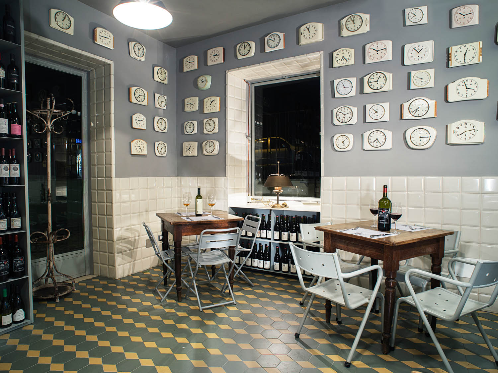

Food & Restarents
GOOD FOOD NEAR THE PANTHEON: ARMANDO AL PANTHEON

Armando Al PantheonConsidering its location less than half a block from the Pantheon, a major Roman tourist attraction, it's no
surprise that Armando al Pantheon books up well in advance. What is shocking—and novel—is that in a sea of traps,
the Gargioli family dedicates every waking hour to serving genuine, thoughtful Roman specialties guided by seasonal,
quality ingredients. This has landed Armando al Pantheon in every major travel magazine and guidebook many times over.
But the hype is fully deserved.
The simple dishes chef Claudio Gargioli is known for, like spaghetti alla gricia (pasta with cured pork jowl, black
pepper and pecorino romano cheese) and spaghetti aglio, olio, e peperoncino (pasta with garlic, oil and chili), are savory
and satisfying. In both dishes the ingredients are few, well balanced, and reminiscent of home cooking. The depth of flavor
of his coda alla vaccinara (braised oxtail) is unmatched in the city. Book well in advance, order every course, and see why
Romans have been infatuated with this institution for over five decades.
SANDWICHES AND MARKET BITES: MORDI E VAI

Mordi E VaiWhen the Testaccio Market re-opened in 2012 in a larger, more modern space than its predecessor, it paved the way for the arrival
of new small businesses. Though Rome's markets traditionally sell raw ingredients, Mordi e Vai, which occupies a stall in the market's
eastern side, serves sandwiches made to order, snacks and prepared foods intended to be eaten on the fly. For around €3, patrons can
have a, homemade-tasting bite prepared by owner Sergio Esposito based on family recipes.
Though sandwiches stuffed with hearty Roman
dishes such as braised beef, meatballs, boiled beef, and tripe in tomato sauce are Mordi e Vai's most popular items, don't miss the fried
meatballs, which are breaded and fried, then sold by the piece.
A REAL (WALLET-FRIENDLY) OSTERIA: OSTERIA BONELLI

Osteria BonelliThere was a time when the word osteria signified a simple eatery with paper on the tables, a small, seasonal menu, and a single glass
for both water in wine. Now the word is trendy and has been co-opted by the city's posh restaurants. But at this busy neighborhood establishment
in Tor Pignattara, Osteria Bonelli stays true to its name.
The menu, which is written on folding chalkboards, circulates through the
osteria's dining room listing dishes rooted in Roman peasant cooking like horse skirt steak and stewed tripe. On Fridays, expect to find grilled
and fried fish specials, while the daily menu features a long list of vegetable side dishes, which Romans believe promotes digestion, a pragmatic
approach to a long and meaty meal.
Osteria Bonelli is located in eastern Rome and well beyond the third century Aurelian walls. To get there,
hop on the Giardinetti-bound commuter train from Termini or Porta Maggiore and get off at the Berardi stop.
CLASSIC RUSTIC ROMAN: L'ARCANGELO

Arcangelo Dandini is the one of Rome's most beloved chefs, a man who embraces seasonal, traditional recipes of the Italian capital. Though he is not precisely a Rome native—he grew up in Rocca Priora, a town on a hill 15 miles southeast of the city—he cooks Roman classics, as well as the specialities of his home town; due to its distance from Rome and its geography, Rocca Priora's Roman cuisine is not identical to its urban neighbor. His dishes are inspired by time spent in family members' home and restaurant kitchens, but he also seeks to recreate specialties of the Roman Renaissance and even ancient delicacies.
potato gnocchiArcangelo's greatest successes are when he keeps things simple. His potato gnocchi, which are dressed with a light tomato and guanciale (cured pork jowl) sauce, are the absolutely lightest in town, and his stewed tripe simmered with tomato and mint has few rivals, while his braised oxtail is enhanced with a dusting of cocoa. Stick to Arcangelo's classics and be sure to kick off the meal with his suppli', fried rice balls studded with mozzarella and chopped chicken gizzards.
REGIONAL GROCERIES: PRO LOCL DOL

Pro Loco DOL is Rome's most important reference point for local, seasonal products. Vincenzo Mancini, DOL's owner, originally
founded his business as a gourmet deli specializing in the cured meats, cheeses, pulses, oils and wines of Lazio, the central Italian
region of which Rome is the capital. In a matter of years, his meticulous research and support of local food production has sparked
renewed interest in craft goods in the region—often dismissed and overlooked by Italian gourmands, which rank Emilia Romagna, Tuscany,
Sicily, and other regions above Lazio in their gastronomic hierarchy.
In December, Mancini's deli moved across the street from its
original location and added full meals to its repertoire. In addition to cured meat and cheese plates, diners will find a
constantly changing menu of pastas and mains, as well as a selection of pizzas. All ingredients, from the olive oil to the pizza
flour, are of regional provenance.
CAFE AND WINE: LITRO
The food at Litro:including many cheeses and cured meats from Pro Loco DOL—is appealing on its own, but the bar is an equally
attractive draw. In addition to pouring excellent and affordably priced wines, Litro's bar is among the city's well stocked. Barman
Pino Mondello is mad about mezcal and offers twists on classic cocktails made from his favorite spirit.
Snag the 75 bus from Termini,
Testaccio, or Trastevere and climb the Janiculum Hill—the city's highest—to arrive at Litro,
a café and wine bar with an outgoing staff and a constantly changing list of wines and spirits. Litro opens in the morning for
coffee and pastries and closes in the late evening. Unlike most of the city's wine bars, it is open all day (Tuesday through Sunday)
and does not close mid-day, so stop by for lunch, an afternoon snack, dinner, or a nightcap. Litro has a menu of mainly
cold plates, so pair your wine or cocktail with a cheese and charcuterie plate, a salad, or the house specialty,
bruschetta with Piennolo del Vesuvio tomatoes, lightly smoked tomatoes from Mt Vesuvius.
SOMETHING DIFFERENT: ETHIOPIAN AT MESOB
ETHIOPIAN AT MESOByou may, at some point on your trip, tire of pasta. In that case it's worth sampling one of the foreign cuisines Rome does well,
including Ethiopian, an import that traces back to Italy's invasion of Africa in WWII.
In an unassuming courtyard off the busy
via Prenestina, Kuki Tadese, the chef and owner of Mesob, reproduces family recipes of richly spiced and deeply flavored vegetable stews.
Each dish is served on a platter lined with injera, a spongy sourdough bread, in the traditional Ethiopian way. Strips of
injera are provided for picking up the stews, which are eaten with your hands. There are some meat dishes, too, like a spicy,
cardamomdoro wot made of chicken and hard boiled eggs, but these are accompanied with liberal helpings of vegetarian and vegan vegetable dishes.